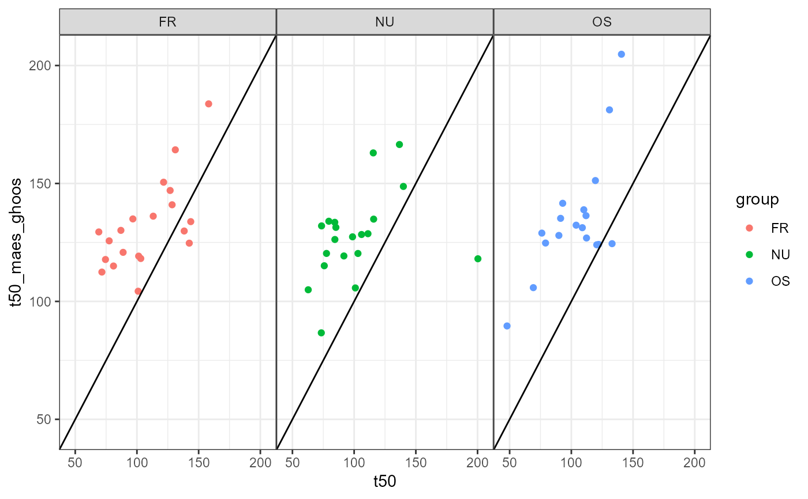

13C time series PDR data from normals and three different meals in a cross-over design from the division of Gastroenterology and Hepatology, University Hospital Zurich. See Kuyumcu et al., Gastric secretion does not affect....
Data are formatted as described in usz_13c. In addition, half
emptying times from MRI measurements are attached to the data as attribute
mri_t50. The example below shows how to analyze the data and present half
emptying times from MRI and 13C in diagrams.
data(usz_13c_d)
Examples
usz_13c_d,13C breath test data with MRI emptying for comparison,13C breath test data with MRI emptying for comparison — usz_13c_d,Source:R/breathtestcore.R,usz_13c_d.Rd,character(0),usz_13c_d,datasets,list(title = "Description", contents = "13C time series PDR data from normals and three different meals \nin a cross-over design from the division of \nGastroenterology and Hepatology,\nUniversity Hospital Zurich. See\nKuyumcu et al.,\nGastric secretion does not affect....
\nData are formatted as described in
"),list(description = "13C time series PDR data from normals and three different meals \nin a cross-over design from the division of \nGastroenterology and Hepatology,\nUniversity Hospital Zurich. See\nKuyumcu et al.,\nGastric secretion does not affect....\nData are formatted as described in usz_13c. In addition, half\nemptying times from MRI measurements are attached to the data as attribute\nmri_t50. The example below shows how to analyze the data and present half\nemptying times from MRI and 13C in diagrams."),data(usz_13c_d),usz_13c. In addition, half\nemptying times from MRI measurements are attached to the data as attribute\nmri_t50. The example below shows how to analyze the data and present half\nemptying times from MRI and 13C in diagrams.# \donttest{ library(dplyr) library(ggplot2) data(usz_13c_d) mri_t50 = attr(usz_13c_d, "mri_t50") d = usz_13c_d %>% cleanup_data() %>% # recommended to test for validity nlme_fit() plot(d) + geom_vline(data = mri_t50, aes(xintercept = t50), linetype = 2)# Maes-Ghoos t50 dd = mri_t50 %>% inner_join( coef(d) %>% filter(parameter=="t50", method == "maes_ghoos"), by = c("patient_id", "group")) %>% mutate( t50_maes_ghoos = value ) ggplot(dd, aes(x=t50, y = t50_maes_ghoos, color = group)) + geom_point() + facet_wrap(~group) + geom_abline(slope = 1, intercept = 0) + xlim(45,205) + ylim(45,205)#> Warning: Removed 1 rows containing missing values (geom_point).# Bluck-Coward t50 dd = mri_t50 %>% inner_join( coef(d) %>% filter(parameter=="t50", method == "bluck_coward"), by = c("patient_id", "group")) %>% mutate( t50_bluck_coward = value ) ggplot(dd, aes(x=t50, y = t50_bluck_coward, color = group)) + geom_point() + facet_wrap(~group) + geom_abline(slope = 1, intercept = 0) + xlim(0,205) + ylim(0,205)# },list(),2021,list(name = "breathtestcore", version = "0.8.0.9001", authors = "Dieter Menne, Benjamin Misselwitz, Mark Fox, University Hospital of Zurich, Dep. Gastroenterology"),list(destination = "dev", mode = "release", version_label = "default", version_tooltip = "Released version", in_dev = FALSE),list(root = "../", title = "breathtestcore"),list(css = "C:/Users/Dieter/Documents/RPackages/breathtestcore/pkgdown/extra.css"),list(type = "default", left = "